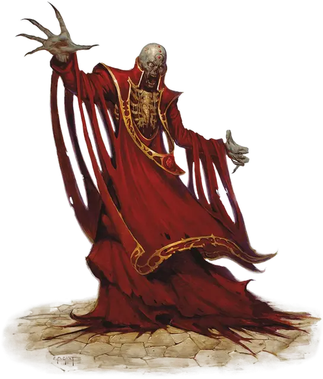

Лич
Lich
Средняя Нежить, любое злое мировоззрение

Класс Доспеха 17 (природный доспех)
Хиты 135 (18к8 + 54)
Скорость 30 футов
| мод | спас | ||
|---|---|---|---|
| СИЛ | 11 | +0 | +0 |
| ЛОВ | 16 | +3 | +3 |
| ТЕЛ | 16 | +3 | +10 |
| мод | спас | ||
|---|---|---|---|
| ИНТ | 20 | +5 | +12 |
| МДР | 14 | +2 | +9 |
| ХАР | 16 | +3 | +3 |
Навыки Восприятие +9, История +12, Магия +19, Проницательность +9
Сопротивление урону некротическая энергия, холод, электричество
Иммунитет к урону яд; дробящий, колющий, рубящий от немагических атак
Иммунитет к состояниям паралич, очарование, отравление, истощение, испуг
Чувства истинное зрение 120 футов, пассивное Восприятие 19
Языки Общий плюс до пяти других языков
Опасность 21 (33000 опыта)
Бонус мастерства +7
Особенности
Легендарное сопротивление (3/день). Если лич проваливает спасбросок, он может вместо этого сделать спасбросок успешным.
Восстановление. Если у лича есть филактерий, лич через 1к10 дней после уничтожения получает новое тело, восстанавливает все хиты и становится живым. Новое тело появляется в пределах 5 футов от филактерия.
Использование заклинаний. Лич является заклинателем 18 уровня. Его базовой характеристикой является Интеллект (Сл спасброска от заклинания 20; +12 к попаданию атаками заклинаниями). У него подготовлены следующие заклинания волшебника:
• Заговоры (неограниченно): волшебная рука [mage hand], луч холода [ray of frost], фокусы [prestidigitation];
• 1 уровень (4 ячейки): волна грома [thunderwave], волшебная стрела [magic missile], обнаружение магии [detect magic], щит [shield];
• 2 уровень (3 ячейки): Мельфова кислотная стрела [Melf’s acid arrow], невидимость [invisibility], обнаружение мыслей [detect thoughts], отражения [mirror image];
• 3 уровень (3 ячейки): восставший труп [animate dead], контрзаклинание [counterspell], огненный шар [fireball], рассеивание магии [dispel magic];
• 4 уровень (3 ячейки): переносящая дверь [dimension door], усыхание [blight];
• 5 уровень (3 ячейки): наблюдение [scrying], облако смерти [cloudkill];
• 6 уровень (1 ячейка): распад [disintegrate], сфера неуязвимости [globe of invulnerability];
• 7 уровень (1 ячейка): перст смерти [finger of death], уход в иной мир [plane shift];
• 8 уровень (1 ячейка): подчинение чудовища [dominate monster], слово силы: оглушение [power word stun];
• 9 уровень (1 ячейка): слово силы: смерть [power word kill].
Сопротивление изгнанию. Лич совершает с преимуществом спасброски от всех эффектов, изгоняющих нежить.
Действия
Парализующее касание. Рукопашная атака заклинанием: +12 к попаданию, досягаемость 5 футов, одно существо. Попадание: Урон холодом 10 (3к6). Цель должна преуспеть в спасброске Телосложения Сл 18, иначе станет парализованной на 1 минуту. Цель может повторять этот спасбросок в конце каждого своего хода, оканчивая эффект на себе при успехе.
Легендарные действия
Лич может совершить 3 легендарных действия, выбирая из представленных ниже вариантов. За один раз можно использовать только одно легендарное действие, и только в конце хода другого существа. Лич восстанавливает использованные легендарные действия в начале своего хода.
Заговор. Лич накладывает заговор.
Парализующее касание (стоит 2 действия). Лич использует Парализующее касание.
Пугающий взгляд (стоит 2 действия). Лич фиксирует взгляд на одном существе, видимом в пределах 10 футов. Цель должна преуспеть в спасброске Мудрости Сл 18 от этой магии, иначе станет испуганной на 1 минуту. Испуганная цель может повторять этот спасбросок в конце каждого своего хода, оканчивая эффект на себе при успехе. Если цель успешно совершила спасбросок или действие эффекта закончилось, она получает иммунитет к взгляду этого лича на следующие 24 часа.
Разрушение жизни (стоит 3 действия). Все существа, не являющиеся нежитью, в пределах 20 футов от лича должны совершить спасбросок Телосложения Сл 18 от этой магии, получая урон некротической энергией 21 (6к6) при провале, или половину этого урона при успехе.
Логово
Лич большую часть времени находится в том месте, в котором он был при жизни. Это может быть дом с привидениями, руины башни или даже школа темной магии. Но некоторые личи могут построить себе собственное, секретное подземелье, о котором никто кроме них не будет знать. Эти подземелья, как правило, хорошо охраняются ловушками или стражами (големы, скелеты и другие чудовища).
Логово лича отражает его высокий интеллект и ужасную хитрость, включая магические и обычные ловушки, которые обеспечивают его безопасность. Нежить, подвижные механизмы и демоны станут препятствием для тех, кто захочет нарушить покой лича.
У лича, встреченного в логове, показатель опасности 22 (41000 опыта).
Действия логова
При значении инициативы «20» (в случае ничьей проигрывает всем конкурентам) лич может совершить действие логова, чтобы вызвать один из следующих эффектов (лич не может использовать один эффект два раунда подряд):
• Лич бросает к8 и восстанавливает одну ячейку заклинаний с уровнем не больше выпавшего результата. Если все такие ячейки доступны, то ничего не происходит.
• Лич выбирает целью одно существо, которое видит в пределах 30 футов. Потрескивающая нить негативной энергии связывает лича и цель. После этого, когда лич получает урон, цель должна будет совершать спасбросок Телосложения Сл 18. При провале лич получает лишь половину урона (округляя в меньшую сторону), а остальной урон получает цель. Эта связь держится до наступления инициативы «20» в следующем раунде, или пока лич или его цель не окажутся вне логова лича.
• Лич вызывает духов существ, которые умерли в его логове. Эти духи материализуются и начинают атаковать одно существо, которые лич видит в пределах 60 футов. Цель должна совершить спасбросок Телосложения Сл 18, иначе получит урон некротической энергией 52 (15к6) при провале, или половину этого урона при успехе. После этого духи исчезают.
Описание
Личи — это бывшие великие волшебники, ставшие нежитью для сохранения самих себя. Они любой ценой копят силы, нисколько не заботясь делами смертных кроме тех случаев, когда они пересекаются с их собственными интересами. Коварные и безумные, они жаждут давно забытых знаний и ужасных секретов. Так как страх смерти не властен над ними, они могут задумывать планы, воплощение которых займет года, десятки лет, а то и столетия.
Личи выглядят как худые скелетоподобные гуманоиды с высохшей кожей, обтягивающей их кости. Их глаза давным-давно сгнили, однако в пустых глазницах горят точечки света, подобные зрачкам. Они часто облачены в остатки хорошей одежды и ювелирные украшения, заношенные и выцветшие со временем.
Секреты нежити. Ни один волшебник не станет личем просто по своей прихоти. Процесс превращения в лича — это хорошо охраняемый секрет. Волшебникам, ищущим эти знания, необходимо заключать сделки с исчадиями, злыми божествами и другими отвратительными существами. Многие обращаются к Оркусу, Демоническому Повелителю Нежити, чьими силами было создано бесчисленное множество личей. Однако те, кто контролируют эти знания, всегда требуют за них службы и верности.
Превращение в лича проходит благодаря ритуалу, в ходе которого душа волшебника заточается в филактерий. Его душа привязывается к миру смертных, что не даёт ей после смерти переходить на другие планы существования. Филактерий представляет собой, как правило, амулет в виде маленькой коробочки, но это может быть любой предмет с пустым пространством внутри, в котором серебром начертаны магические символы имени, связывания, бессмертия и темной волшбы.
Как только филактерий подготовлен, будущий лич должен выпить зелье трансформации — смесь ужасного яда с кровью разумного существа, чья душа тоже приносится в жертву. После этого волшебник умирает, а затем, когда его душа будет заключена в филактерий, восстает как лич.
Жертвоприношение душ. Лич должен периодически скармливать души своему филактерию, чтобы поддерживать магию, сохраняющую его тело и сознание. Он делает это, используя заклинание заточение. Вместо выбора одной из стандартных опций заклинания, лич использует его, чтобы заключить тело и душу жертвы внутри филактерия. Филактерий должен находиться на том же плане, что и лич, чтобы заклинание сработало. Филактерий лича может одновременно содержать только одно существо, а заклинание рассеивание магии 9 уровня, примененное на филактерий, освобождает заключенное в нем существо. Существо, заключенное в филактерии, через 24 часа поглощается им и исчезает без следа, после чего ничто, кроме божественного вмешательства, не может вернуть его к жизни.
Лич, который не смог или забыл поддерживать свое тело душами жертв, начинает физически разрушаться, и в конце концов может превратиться в демилича.
Смерть и восстановление. Когда тело лича случайно или намеренно разрушается, его воля и разум уходят из тела, оставляя позади лишь бездыханный труп. В течение нескольких дней рядом с филактерием лича формируется новое тело из светящегося дыма, исходящего из предмета. Поскольку разрушение филактерии означает возможность вечной смерти, лич обычно хранит свой филактерий в укрытом и хорошо охраняемом месте.
Уничтожение филактерия лича — нелегкая задача, ведь часто для этого требуется особый ритуал, предмет или оружие. Каждый филактерий уникален, и секрет его уничтожения может стать целью целого приключения.
Одинокое существование. Время от времени лич может отвлечься от своей изоляционистской погони за мощью и поинтересоваться тем, что происходит в мире вокруг — такое происходит чаще всего во время великих потрясений, которые напоминают ему о жизни, которой он когда-то жил. В прочих случаях они живут в изоляции, вступая в контакт лишь с теми существами, чья служба помогает им поддерживать безопасность их логова.
Некоторые личи называют себя своими прежними именами и прозвищами, например, Чёрная Рука или Забытый Король.
Коллекционеры магии. Личи ищут и собирают свитки заклинаний и магические предметы. В дополнение к своим магическим способностям лич также может использовать и создавать зелья и свитки, имеет свою личную библиотеку с магическими книгами, и часто у лича есть один или два магических посоха или магические палочки. Если на лича нападут, то он не побоится их использовать.
Натура нежити. Личу не нужен воздух, еда, питье и сон.